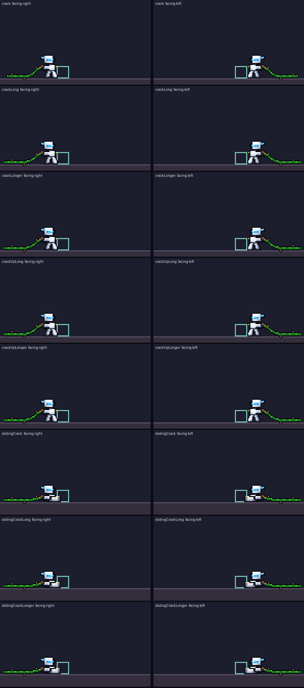

60 steps a second, each picture for its hold (5 · 5 · 10), then 40 steps at rest (standing rows: his idle with the whip coiled at his hip; sliding rows: his own slide picture). Left column facing right, right column facing left (mirrored about his hand). Orange box: the overhead swing's light hit. Red box: the tip, the main hit. Teal box: a minion standing against his front. Yellow dot: his hand, the pivot.
